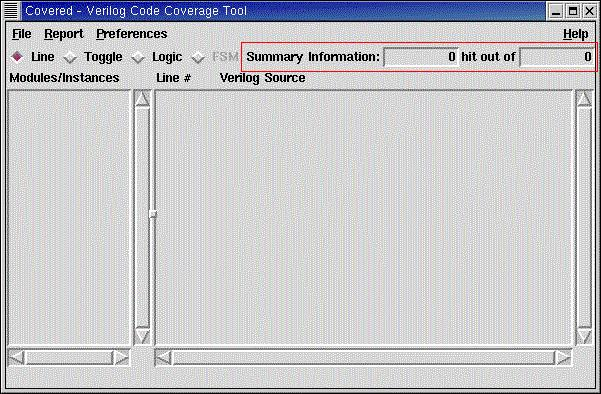

The summary coverage bar contains the high-level coverage information for the currently selected module/instance and coverage metric. Typically, this information will tell the user the number of coverage points that were hit out of the total number of coverage points that Covered measured during simulation. If the number hit is less than the total, the currently selected module/instance was found to be not fully covered, and the name of the module/instance will be highlighted in the module/instance selection box with the uncovered color scheme.
Figure 1. Covered Main Window Highlighting the Summary Coverage Bar
